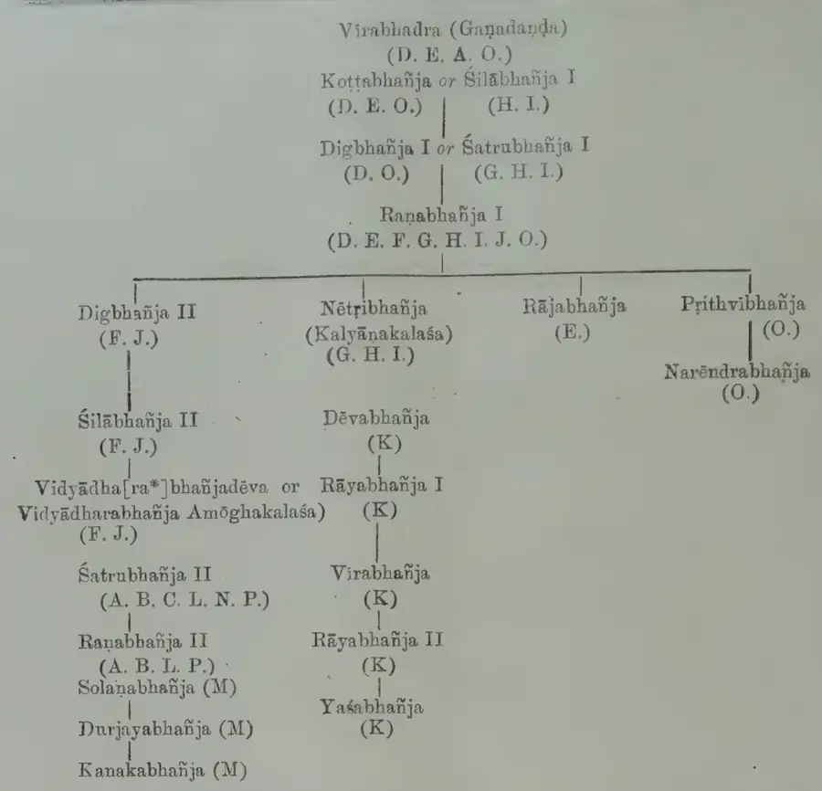
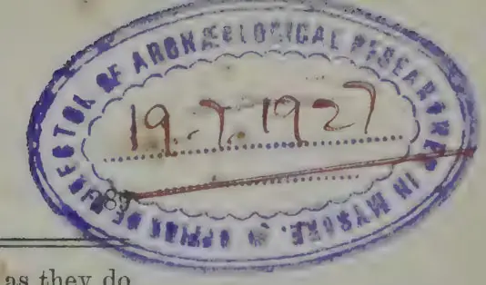
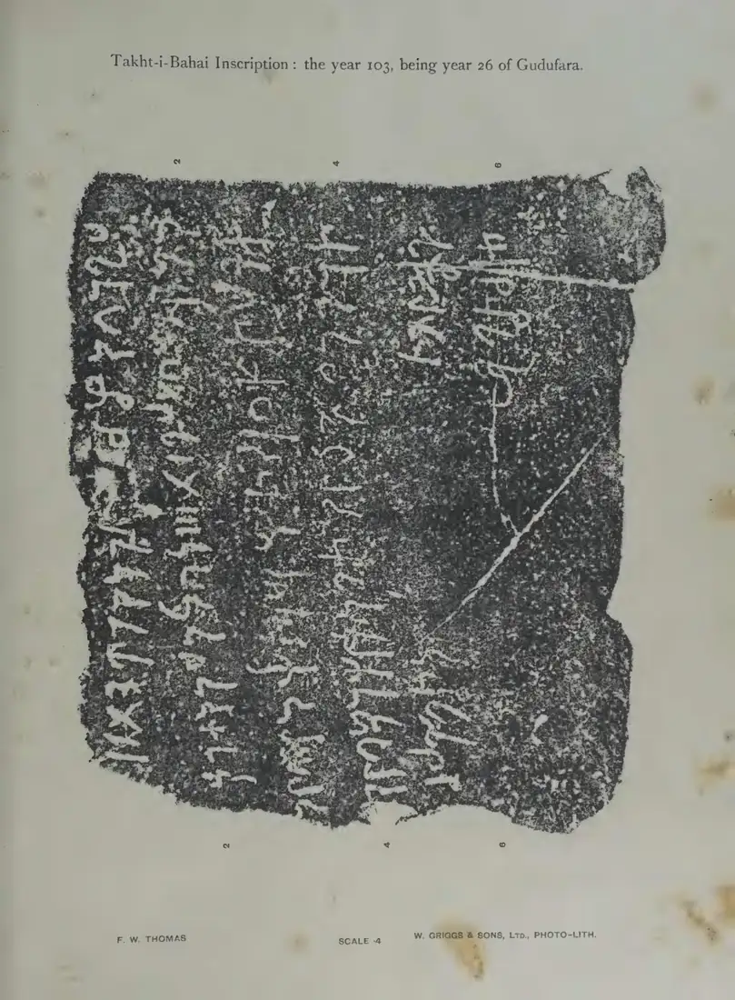
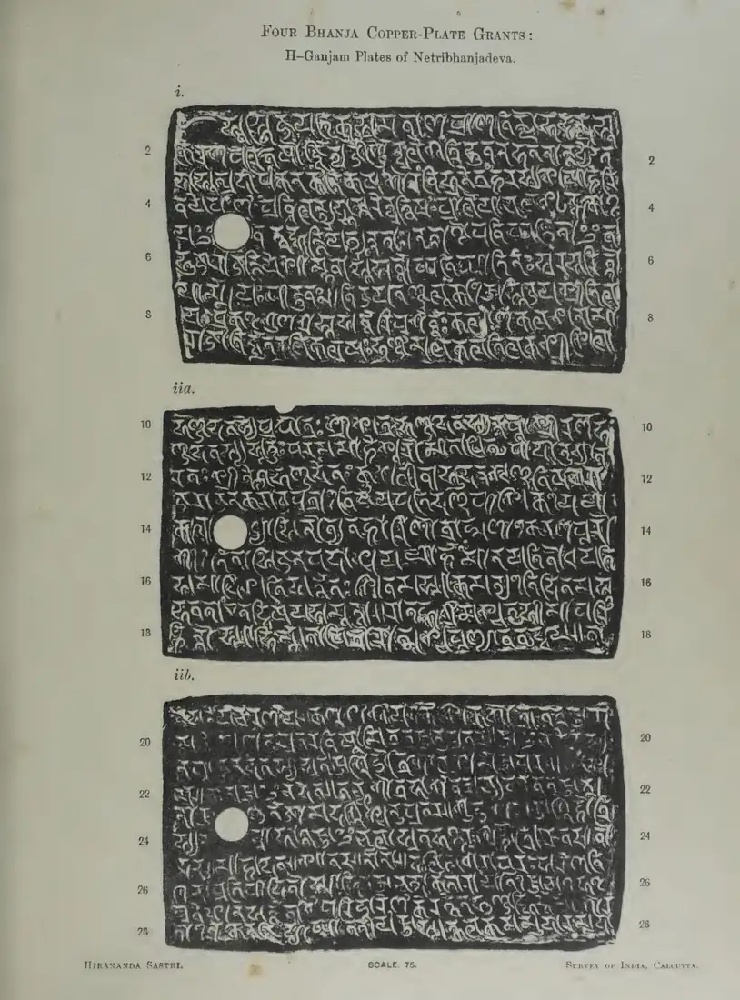
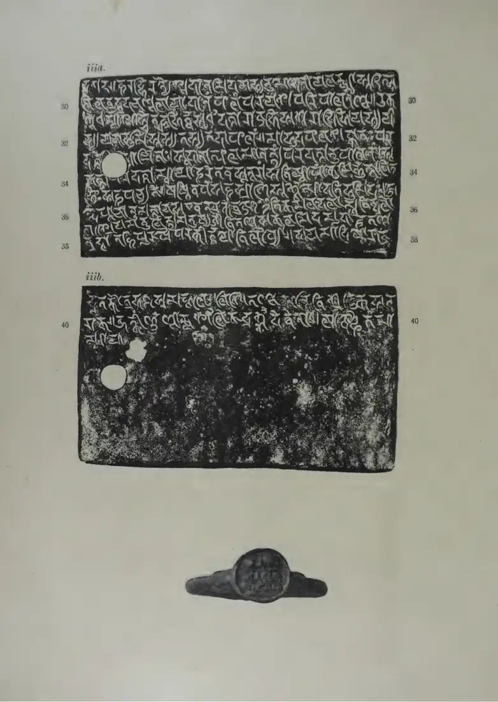
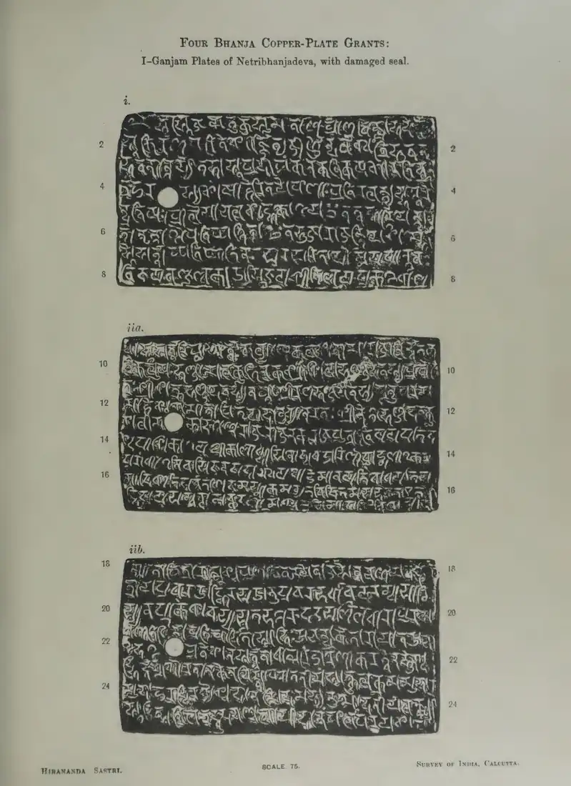
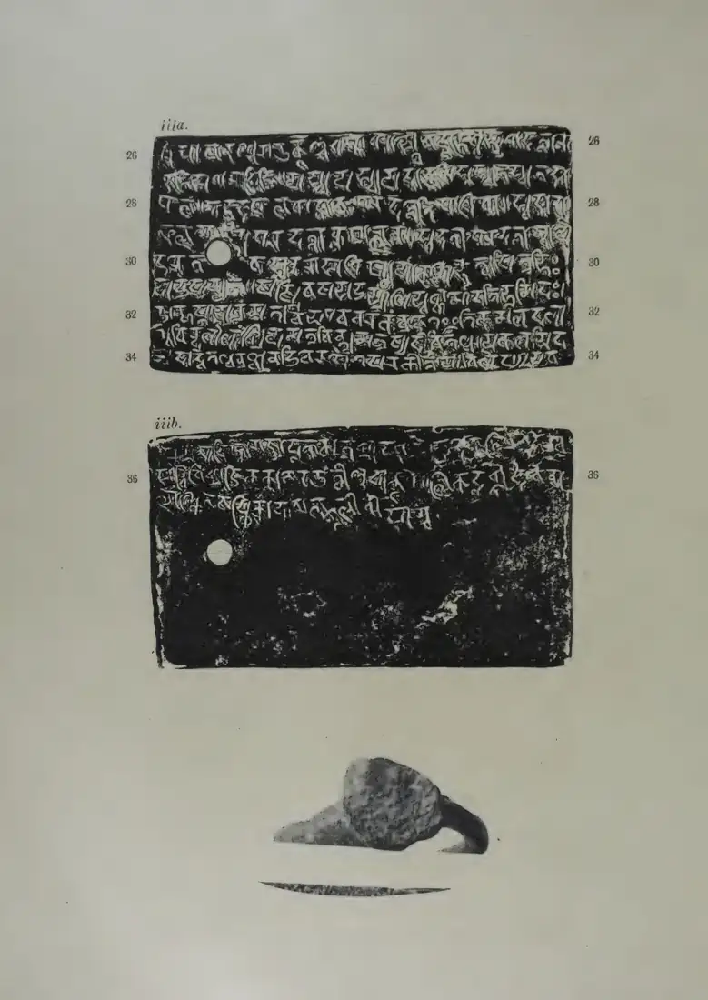
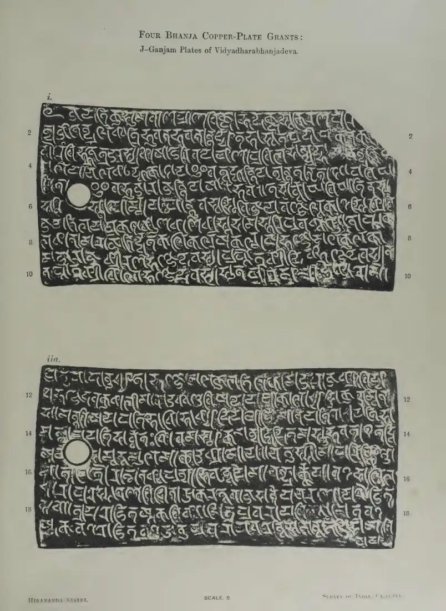
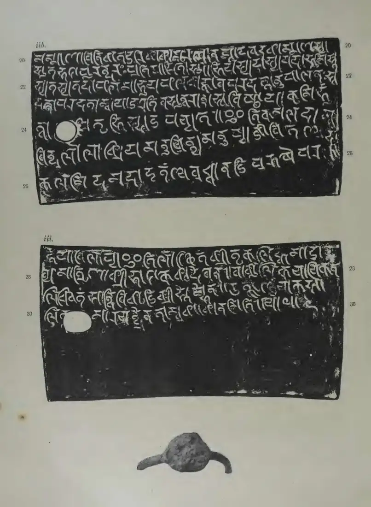
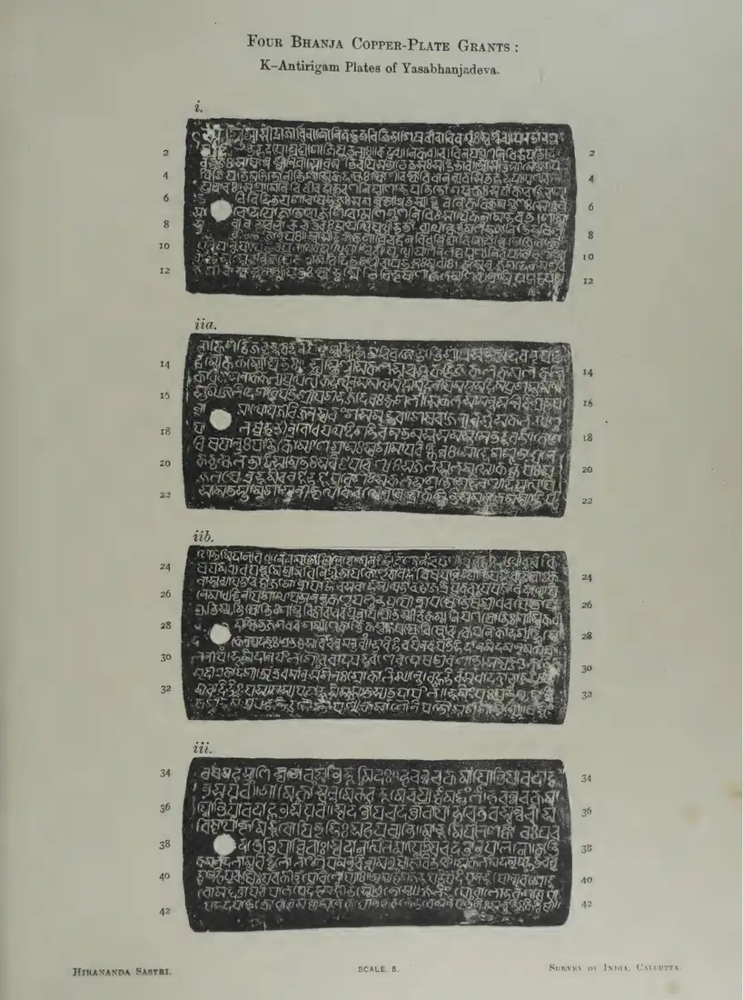

Four Bhanja copper-plate grants
No. 29.—FOUR BHANJA COPPER-PLATE GRANTS.
By
RAI BAHADUR HIRALAL, B.A., DEPUTY COMMISSIONER (Retired), JUBULPORE.
The Government Epigraphist for India forwarded to me impressions of 4 sets of copper-plate grants belonging to the Bhañja dynasty sent to him by the late Mr. Tarini Charan Rath, B.A., District Munsiff of Aska, Ganjām District. Brief notices in respect of them appeared in Rao Sahib Krishna Sastri's Annual Report on Epigraphy for 1917-18 on pages 12 and 135 ff., paragraphs 10—14. * I now edit the charters from the impressions supplied by him, which are reproduced in the accompanying plates.
The Bhañja grants yet discovered number eleven2 including the present ones, four of which have been edited in the Journal of the Bengal Asiatic Society and the rest in this Journal—including the one of the Bengal Asiatic Society's Journal, which has been re-edited by Dr. Kielhorn in Volume IX, above. For facility of reference the charters have been assigned
1 Cf. Chavannes, T'oung Pao II. viii, p. 187?.
2 Sixteen. See Postscript.
Plate 1 is bound after this page.
distinguishing letters given below, especially because some of them bear the same name, having been found in the same locality. In editing the two Baudh charters Mr. R. D. Banerji distinguished them by the letters A & B and Mr. Mazumdar gave to the Sonpur grant the letter C, which have been retained in my scheme.
A. Baudh grant of Raṇabhañjadēva of the 54th year; by Banerji, Ep. Ind., Vol. XII, page 322 ff.
B. Baudh grant of Raṇabhañjadēva of the 26th year; by Banerji, Ep. Ind., Vol. XII, page 325 ff.
C. Sonpur grant of Śatrubhañjadēva; by Mazumdar, Ep. Ind., Vol. XI, page 98 ff.
D. Bāmanghāti grant of Raṇabhañjadēva, J. B. A. S., XL, Part I, page 165 ff.
E. Bāmanghāti grant of Rājabhañjadēva, J. B. A. S., XL, Part I, page 168 ff.
F. Orissa grant of Vidyādharabhañjadēva, J. B. A. S., LVI, Part I, page 154, re-edited by Kielhorn in Ep. Ind., Vol. IX, page 271.
G. Ganjām plates of Nētribhañjadēva, J. B. A. S., Vol. V, page 669.
H. Ganjām plates of Nētribhañjadēva edited below.
I. Ganjām plates of Nētribhañjadēva edited below.
J. Ganjām plates of Vidyādharabhañjadēva edited below.
K. Antirigām plates of Yaśabhañjadēva edited below.
The description of these plates supplied by the Epigraphical office is reproduced below.
H. Ganjām plates of Nētribhañjadēva.
"This is a set of three copper-plates, oblong in shape, strung together on a ring of the same metal, which passes through a hole of about in diameter near the proper right margin and has its ends riveted into the arms of the bracket at the back of the seal accompanying it. The ring was uncut when the plates reached this office. The plates have writing on five faces in all, the first plate being engraved only on the inner side. They measure about in breadth and in height. They bear slightly raised rims on either face, though those of the first plate are worn out a little. The ring has a diameter of about . The seal is circular in shape and has a diameter of about . On its countersunk surface it bears in relief the figure of a lion at the top of proper left with the legend 'Śrī-Nētribhañjadēvasya' below it in two lines. The entire set weighs about 158 tolas."
I. Ganjām plates of Nētribhañjadēva.
"This is a set of three copper-plates, oblong in shape, strung together on a ring of the same metal which passes through a hole about in diameter at about 1" from the proper right margin. The ring was uncut when the set reached the office. It carries a fixed seal which is now partly damaged and must have been circular in form originally. The engravings on it are all lost. The first plate is written only on one side while the other two have writing on both the faces. The plates have very slight rims. They measure 6" in breadth and in height. The set weighs 71 tolas."
J. Ganjām plates of Vidyādharabhañjadēva.
"This is a set of three copper-plates, oblong in shape and strung together on a ring in diameter, which passes through a hole of about in diameter near the proper right margin. The ring carries a seal into the two arms of the bracket on the back of which are fixed its two ends. The seal is much damaged so that nothing remains of the original engravings on its surface. Its diameter is about . The plates measure in breadth and in height. They have writing on four faces in all, the first and the last ones being blank in outer faces. The first plate is broken to the extent of 1" in the right hand top corner. The total weight of the set is 85 tolas. The plates are not uniformly thick, the first being slightly thinner than the other two."
K. Antirigām plates of Yaśabhañjadēva.
“This is a set of three thin copper-plates strung on a ring of the same metal passing through a hole about ” in diameter near the proper right margin. They are oblong in shape and have four faces of writing in all, the first and the last being blank on the outer sides. They have no rims worth the name; still the writing is in good preservation. The ring which is about ” in diameter carries a turned knob into the base of which its two ends are fixed. The knob is about ” long and is a miniature representation of the kulaśikā seen on the top of the broad umbrella used in the South Indian temples. The plates are a little drawn out in the side margins and have therefore slightly rounded corners. They measure about ” in breadth and ” in height. The weight of the set is 72 tolas. The plates were found in a village called Antirigām in the Pūrbakhanda division of the Chatrāpur tāluk, not far from Jauguḍa, in a field while ploughing.”
The language of all the records is Sanekrit. written in the Nāgari character influenced by the Oriyā style more conspicuously in charter K than the three others, which closely resemble one another not only in characters, but in the phraseology used in them. All the records as usual are divided into three portions, the first and the third in verse, the former recording the invocations to the family god and the genealogy of the king and the latter benedictions and imprecations quoted from religious books, while the second or the middle portion in prose deals with the business in hand. There is also a little prose at the end of the records giving the names of the messenger, the writer, the engraver and the seal-affixer. The first portion being composed by a learned man of the court once for all during the currency of a rign, is always ornate and so it is in the present grants. The second is usually full of mistakes, as business respects neither rhetoric nor grammar and goes straight to the point, even admitting forms like Svāmisya, Śarmisya, Agnihōtrisya, so long as the sense is not obscured. Imprecations being mere quotations from Dharma-Śāstras are pure formalities of the age, given little care in point of accuracy, though in well written records they receive as much attention as the other parts of the records. In our records there is ample evidence of the carelessness with which quotations have been entered. In some cases the verses are incomplete, in others they have been mutilated and strung together in a new form, for instance, see J, where a verse occurs as follows:—
यस्ययस्य यदा भूमिस्तस्य तदा फलं । मा भुयफलशङ्का वः परदत्तानुपालनः ॥
which gives a jumble of mis-spellings and misjoinders.
As regards the peculiarities in writing a full description has been given by Dr. Kielhorn in his article on the Orissa plates of Vidyādharabhañja, re-edited by him in Vol. IX, pp. 271 ff. in this Journal. His remarks almost wholly apply to the plates H, I and J, and need not be repeated. The plates K are more modern than the other three and exhibit more prominently the Oriyā style of writing, the chief characteristic of which is the rounding of the straight or angular portions into a curve. The plates H, I and J will show that the top lines of letters are not straight, but slightly curved, furnishing each letter with a sort of a horn. In K the form of क gets transformed into ङ्, a ख into ङ् a ग into ङ् and so on. These are really Oriyā letters. Of course Oriyā characters are no other than Nāgari letters with the inevitable rounding resulting from an iron stylus playing on palm leaves, which would be torn if straight lines were drawn on them. As a matter of fact the slanting limbs of the letters in all these four records are too prominent to require any mention. I would not therefore dilate any further on this point.
I shall now proceed to the contents of the records and the historical data they give us. The charters H and I were issued from Vañjulvaka by Nētribhañjadēva surnamed Kalyānakalaśa, son of Raṇabhañjadēva, grandson of Śatrubhañjadēva and great-grandson of Śilābhañjadēva.
H grants a village named Rātaṅga1 in the Vāsudēvakhaṇda-vishaya to a number of Agnihōtrins belonging to the Kauśika- and Vatsa-gōtrus. The plate I grants a village named Machchhādagrāma of the Māchhādakhaṇda to another donee of the Vātsya-gōtra. These two records do not give either the residence of the donees or the place whence their forefathers came, nor do they state the occasion on which they were granted. They state as usual that the gifts were made for increasing the religious merits of the king's father, mother and self. They do not refer to any date whatsoever, but simply say that they were issued at the king's own order and written by the Minister for peace and war, in the case of H by Savarāja and in the case of I by Kubēra. Both were incised by a goldsmith (akshaśālika) named Durgadēva. The seal in H was affixed by Māmmā, apparently a short form of Mahāmāyā (the queen) and in I a lady, named Jachchhikā of the noble family. The messenger for H was Bhaṭṭa Sumaṅgala, but the name of that in I is not legible.
The charter J was issued by Mahārāja Vidyādharabhañjadēva, surnamed Amōghakalaśa, son of Šilābhañjadēva, grandson of Digbhañjadēva and great-grandson of Raṇabhañjadēva. It was issued from the ancestral capital Vañjulvaka and records the grant of a village named Mūlamāchhāda (i.e., Māchhāda proper) situated in the Māchhādakhaṇda-vishaya to Bhaṭṭa Purandara, an emigrant from Manmāṇa, situated in the district Taṭisama-vishaya in Varebdhi2 (province). In this case as in the previous two, the gift was made for increasing the religious merit of the donor and his parents and bears no date. The record was composed by Stambhe, the Minister for peace and war, and incised by the goldsmith Kumārachandra, and the seal was affixed by Trikalinga-Mahādēvī, on the record being apparently presented by the Prime Minister Bhaṭṭa Kēśavadēva. One Chāchika is recorded as the vārgulika which appears to be an alternative term for dūtaka or messenger.3 All these names occur in plate F except the last, with a medley of offices, which throw a doubt on its genuineness, but this is susceptible of being explained, as would appear later on. The last charter K was issued in the 3rd year (of the king's reign) on the 11th day of the bright fortnight of the Kārtika month (known also as Prabōdhinī Ēkādaśī), the day on which Vishṇu awakes from his four months' sleep, granting the village Komyāṇa of Vōdā-vishaya to the astrologer Jagadhara-Śarman, resident of Paṭṭavādapāṭaka, situated in the district of Kontarāvaṅga-vishaya, emigrant from Vapabhūmi, situated in the middle of Thīhāra-vishaya by Yaśabhañjadēva, son of Rāyabhañja II, who was son of Vīrabhañja, who was son of Rāyabhañja I, who was son of the Rājādhirāja Dēvabhañja, styled Samasta-Khiñjali-dēs-ādhipati or lord of the whole Khiñjali country, which connects him with the family headed by Šilābhañjadēva, from whom the kings referred to in the preceding three (H, I, J) records, were descended. Though Khiñjali is not mentioned in the three foregoing records in hand, it finds a mention in A, B and C. In the latter there is a mention of Ubhaya-Khiñjali-maṇdala which shows that the Khiñjali was divided into two maṇdalas or divisions, though owned by the same king. The records, however, do not show how Dēvabhañja, the original ancestor of Yaśabhañja's family, was connected with the parental stock to which all the kings mentioned in plates A to J appear to belong. From these eleven4 records of the Bhañja family the following tentative genealogy5 may be made out :—
1 [R. B. Krishna Sastri would read this name as Arāṭaha ; see his Ep. Rep. for 1917-18, p. 12, No. 6.—Ed.]
2 [R. B. Krishna Sastri would read it as Varēndhi, see ibid., p. 136, para. 13.—Ed.]
3 [If it is a derivative of the Telugu vargu = ledger, the official might have been a ledger-keeper of land given. By analogy it appears to be supported by the Kanarese expression vargakodu which means "to deliver land to somebody as his property."—Ed.]
4 Sixteen. See Postscript.
5 [In drawing the genealogical tree we should not lose sight of the fact that some of these rulers used different seals, for such a difference can well indicate a different honse or branch of a dynasty.—Ed.]

NOTE:—Letters in the brackets refer to the charters as named in this article and the postscript. Gaṇadanḍa appears to have been the title of the original ancestor, which is found in some records in a corrupted form as Gandhata.
In the Bāmanghāṭi charters (D. E.) which appear to be the oldest, it is stated that the original ancestor of the Bhañja family was one Virabhadra, who was reared up by Vaśishthamuni. From him was descended in the main line king Koṭṭabhañja whose graudson was Raṇabhañja; this seems to imply that there were several other branches, the senior being the one in which Raṇabhañja I was born. As the saying goes, two swords cannot remain in a single scabbard, the junior members of the family had apparently no alternative but to settle elsewhere, either as subordinate or independent rulers. It appears that the senior branch continued to observe the Orissa practice of repeating the names of its ancestors, while the junior ones adopted a different scheme. Thus in the main branch with 8 kings, there is only one whose name is not repeated, while in the second there is only a single name out of 6; which has been repeated. In the main line there were 2 Śilābhañjas, 2 Digbhañjas, 2 Śatrubhañjas, and 2 Raṇabhañjas, although in one case the first Digbhañja was apparently identical with the first Śatrubhañja. In the junior branch there were only 2 Rāyabhañjas. In the main line the word Bhañja forms an integral part of the proper name, without which the latter would be ridiculous. In the junior line this is not the case as its elision would still give an appropriate connotation. For instance, it would be extremely uncomplimentary to name one's
son as Śatru or enemy, unless bhañja were to be an integral part of it, which would make him the 'vanquisher of an enemy'. Similarly śilā is a rock, but with bhañju added, it makes its wearer 'the breaker of rocks'. Raṇa is battle, but a king is no battle; he is Raṇabhañja, the 'conqueror in battle'. Diś are the 4 or 10 quarters. Obviously the king cannot be diś, but it is a great compliment to him to be called Digbhañja, the 'victor of all the quarters'. There is only one name in that line which appears to be self-sufficient without the bhañja and that is Vidyādharabhañja found in two plates (F and J) where in each case the last letter ra is absent which, however, is supplied by the seal attached to the charter F. By the way I may here note that the king had the title of 'Āmōghakalaśa', which was conjecturally read by Dr. Kielhorn as Dharmmakalaśa, owing to an over-engraving in the part where the epithet occurred. It was natural for him to read it as such, on the analogy of Kalayāṇakalaśa attached to the name of Nētribhañja, especially as the last letter looked like double m, which was apparently meant for gh. Dr. Kielhorn has clearly shown that plates F are palimpsests, but what is most curious is that the alterations are most prominent in the names of the donor, his title and his ministers. Plates J show that the Prime Minister was Bhaṭta Kēśavadēva, who presented the charter to the queen for affixing the royal seal, and that the composer of the charter was Stambha, the Minister for peace and war, in whose office it appears that such records used to be prepared. In plates F the offices are reversed, whereby Kēśava becomes Minister for peace and war, while Stambha becomes the Mantri.1 The alterations were so carelessly made that Khambha (the popular form of Stambha) continued to be shown as Minister for peace and war and, as such the writer of the charter. This led Dr. Kielhorn to suppose that Stambha and Khambha were different names, occupying the offices of Mantri and Sandhi-vigrahika respectively, while Kēśava was put down as a messenger, in view of the fact that no messenger was mentioned in the record.
My view of the matter is that the record F was originally prepared during the reign of a short-lived king, the immediate successor of Śilābhañja II, but it could not be issued before his death. At this stage Vidyādhara, the younger brother of the deceased, was installed, not without a coup d'état, which brought the Minister for peace and war to prominence causing the supersession of the Prime Minister Kēśava by Stambha for the time being. The accession of Vidyādhara to the throne must have been an occasion for munificent gifts and apparently the charter F was issued in hot haste, with necessary corrections, though not very carefully carried out as
I think the original record was exactly like this, except perhaps that at (a) the word प्रवेशितं and at (b) समानीतं or some such equivalents were omitted. In tampering with the record the first alteration to have been made was the insertion of the family name of Stambhadēva as Tējađika, which took the place of pravēśitam at (a) leaving no room for the word mantriṇā to precede his proper name, which was next inserted in the place of Kēśavadēva. The official designation mantriṇā had therefore to follow instead of preceding his name against the usual practice. Thus the word mantriṇā had to be put in the place of the unknown word at (b). This necessitated the insertion of his part of the duty (that is, presenting the record to the queen for affixing the royal seal) further on, again against the usual practice, and the word प्रवेशितं had therefore to go in the place of वार्गुलिक. There remained now Kēśava's name to be inserted and it was apparently put in the place occupied by चाचकेन which was as usual followed by लिखितं संधिविग्रहिक, which was left intact, the duty and the office of the displaced minister thus being joined with his name in this manner. What was omitted to be done was the elision of खम्पेन which created an almost meaningless colophon as follows :—
1 Our record J which has no signs of being tampered with at all reads as follows at the end :—
लाञ्चिकृतं श्रीचक्रलिङ्गमहादेव्या (a) मंत्रिणा श्रीभट्टकेशवदेवेन। (b) वार्गुलिकचाचकेन लिखितं संधिविग्रहिक श्री-सम्मेन। उत्कीर्णवाचसालीकुमारचन्द्रेण ॥
लाञ्चिकृतं श्रीमहादेव्या तेजडिकेन श्रीभट्टकेशवदेव मंब्रिणा प्रवेशितं केशवेन लिखितं संधिविग्रहिक खम्पन उत्कीर्णवाचसालीकुमारचन्द्रेन ॥
[The expression Tējađika might be connected with the Telugu and Kanarese Tēji meaning a horse. The title may have been derived from the fact of Stambha or his ancestors having been originally Keepers of royal horses.—Ed.]
referred to before. Things may have afterwards resumed the normal condition including the restoration to office of previous employees, when the charter I was issued. This would also account for the peculiar name Vidyādhara as Śilābhañja II's successor, who should have been in the ordinary course named as Digbhañja III, (who should be no other than the deceased elder brother of Vidyādhara in the present case). I feel this is rather a wild conjecture, but until evidence to the contrary is available, there is nothing strange about it. In Orissa the śāstraic custom of continuing ancestral names1 has survived even up to the present day. For instance, the Rāja of Bāmra is either a Sūḍhaladēva or a Tribhuvanadēva and I have personally known three generations, Sir Sūḍhaladēva, his son Tribhuvanadēva and his grandson Sūḍhaladēva again. In Pāl Lahrā, situated between Bāmra and Keonjhar, the Rāja is either " Pāṭ Ganēshvara Pāl " or " Pāṭ Muni Pāl ". In the Bhañja family the recurring names appear to have been four, viz., Śilā, Dig, Śatru and Rana, and each has had a repetition according to the inscriptions found. There is nothing to prevent the discovery of a third name-sake of any or all of them.
There are a number of geographical names in the records which have been yet found, but no serious attempt was ever made to identify them. In an appendix to this article I have tried to identify not only places mentioned in the four records in hand, about which I have added a special note in the end, but also those mentioned in charters previously edited. It will be seen from them that the oldest charters D and E refer to villages in the extreme north of the Mayūrabhañja State, A, B and C to those in the Baudh State to the west, and the remaining ones to those in the Ganjām District. This gives an indication of the extent of the Bhañja kingdom, which apparently included almost all the tributary states2 of Orissa together with the northern portion of the Ganjām District covering about 16,000 square miles, about half of which is occupied by Mayūrbhañja and Keonjhar States, both of which were owned by Ubhaya-Khiñjal-yadhipati, or the lord of both the Khiñjalis. This title was retained by the latest king of the family, viz., Yaśabhañja of charter K, who styled himself as Samasta-Khiñjali-dēś-ādhipati or the 'lord of the whole Khiñjali country', which can be no other than the present Keonjhar. The aspirate of the first letter disappeared, a soft o after i crept in after the Oriyā mode of pronunciation and the l at the end changed into r, which transformed the original name into Keonjhari or Keonjhar.
The latest Imperial Gazetteer3 states, " Keonjhar is divided into two widely dissimilar tracts, Lower Keonjhar being a region of valleys and lowlands, while Upper Keonjhar includes
1 Cf. V. A. Smith, Ind. Ant., Vol. XXXV, p. 291.
2 The traditions of the various Rāj families of these states support it; for instance, the Keonjhar Rāja claims descent from a brother of the Bhañja king of Mayūrbhañja State, which is referred to later on in some details. Pāl Lahrā was admittedly a subordinate of Keonjhar, which claims that one of its Rājas got Aṭhamalik from the Puri king. The Daspallā chief traces his origin to a younger son of Rāja Nārāyaṇa Bhañj of Baudh, where they say the original Rāja was a Brāhman, but was ousted by the Bhañja chiefs (Cunningham, Arch. Rep., Vol. XIII, p. 110). The Bonai State of which Rehrakhol is a branch has a peacock for its crest with a curious story, which looks like a variant of the origin of Mayūrabhañja kings discussed later on. The Bonai legend avers that its original ancestor when born was abandoned and was in danger of falling into the hands of the enemy when a peacock swallowed it and kept it in his craw, until the danger was over. The infant was born under a Kadamba tree, so the family came to be called Kadambavarśi, but it regards the peacock as sacred. This peacock totem certainly establishes a connection with the Mayūrabhañja family. The Bāmra family are Gaṅgavarśis, whose connection with the Bhañjas has been shown later on. The chiefs of Dhenkanal admit that they were feudatories of the old Orissa Rājas, who conferred the title of Sāmauta on them. Thē Athamalik Rāja who bears a similar title has a tradition of his origin similar to that of Mayūrabhañja, i.e., from an emigrant from Jaipur. The Khandapara and Nayāgarh States, the latter being an offshoot of the former, got the title of Rāja during the Marāṭha campaign of Orissa. None of the other states, Baramba, Hindol, Narsinghpur, Nilgiri, Rangir, Talcher and Tigaria, encompass an area of more than 400 square miles and could not but have been subordinate to the Bhañjas, if they existed as separate entities in those times. See "Who is who in India", part VIII, Lucknow edition.
3 See Vol. LXV, p. 202.

the mountainous high lands.” These are natural divisions which must have existed, as they do to-day, during the Bhañja rule, and the word “ubhaya” meaning ‘ both ’ found in the records in connection with Khiñjali not only justifies its use, but affords a clue for the identification of the country. Local chroniclers also support the fact that Keonjhar was ruled by the Bhañja Rājas. Hunter’s Gazetteer1 plainly records:—“ Keonjhar State originally formed part of Morbhañj, but about 200 years ago, the tribes of this part, finding it a great hardship to travel through the perilous forests of Morbhañj to obtain justice from their prince, separated themselves and set up the brother of the Morbhañj Rāja as their independent ruler.” That is to say, Keonjhar separated from the parental stock less than 300 years ago and was part of the Mayūrabhañja State where many of the Bhañja inscriptions were incised.
The records show that there were about three capitals of the Bhañja kings, either co-existing or at different periods of their rule. D. and E., the oldest records as noted before, give Khijinggā or Khijjinga as the residence of the king. This is identical with the present Khiching to the west of Baripada, the present head-quarters of the Mayūrabhañja State. It still contains numerous ancient remains about which Rai Sahib Nagendra Nath Vasu remarks:—“ The superior workmanship of these has indeed been a startling discovery for us, The faces of the goddésses beam with radiant smiles which seem to be a realization on stone of the best dreams of poets and artists. The smiles .....look as fresh and soft as newly-blown buds ..... and illustrate that motherly grace which is a pure Indian conception and is quite distinct from what we find in the Italian painter's Madonna.”2 A., B. and C. refer to Dhritipura as the old capital which is untraceable. F., G., H., I. and J. were issued from Vañjulvaka and as the villages mentioned in them are all found in the Ganjām district, it is perhaps not unfair to conclude that Vañjulvaka was also situated within that district. The name connotes a superabundance of cane plants, for which the Ganjām district is noted. The last record, K., mentions no capital at all.
In spite of the extensive area occupied by the Bhañja family and its branches, it, however, appears that they were not the sovereign lords of the country they ruled. The original ancestor of the family appears to have been an officer of some Gaṇa or Hiudu republic, as his title Gaṇadanḍa indicates. The title was apparently a short form of Gaṇadanḍa-nāyaka or Gaṇadanḍa-pāla, the former being equivalent to a Minister and the latter to an officer in charge of the maintenance of the army.3 There are numerous instances of ministers or army officers becoming kings, whenever they found the administration over them weak. Traditions of a strong member of the democracy usurping the power of government and finally becoming king are not wanting in the Orissa Janapadas as the political communities were called in olden days of which the Athmallik State is an excellent example. It was ruled by eight representatives of the people by turns, which gave it the name of Athamallika (the tract ruled by eight). It is not very far away from Mayūrabhañja. What wonder that Virabhadra and his descendants should have seen their opportunity and become the sole masters of their political community. Judging from the titles of the inscriptional kings of this line, however, it does not appear that they ever attained to paramount sovereignty, and as such they must have become the Māṇalikas of the Mahākōsala kings, firstly of the Sōmavamśis of Vinitapura (Binka) and later on, of the Haihayas of Ratanpur, both of whom bore the title of Trikalingāchipati or “ Lord of the Trikalingas,” which, apparently, included the Orissa Tributary Mahals. The omission, in the grants, of references to any sovereign power, however, indicates that the Bhañjas enjoyed much extended powers and were at any rate semi-independent chiefs.
1 Vol. VIII, p. 121 (Second Edition).
2 Mayūrabhanja Arch. Rep., Part I, Preface, page vii.
3 Mr. Jayaswal's Hindu Polity, Part II, pp. 134 and 147.
There is no record of any conquest made by them, the eulogistic epithet of Jagadēkamalla-vijagī added to the name of Yaśabhañja being ambiguous. It may mean 'the conqueror of Jagadēkamalla' or 'the one warrior and conqueror in the world'.1 It, however, seems that the Rājas of the Bhañja dynasty were connected with the Southern Jaipur instead of the Northern Jaipur of Rājputāna, to which local chroniclers connect them, in the wake of all Rājputs, who consider it an honour to link themselves with the country regarded as the true home of the Kshatriyas. The Jaipur Zamindār, formerly a Rāja, who still holds an estate covering about ten thousand square miles, relates that the predecessors of his family belonged to Śilāvamśa,2 and we know from the Buguda3 and Śaśānka's charters4 that the family of Śilōdbhavas or Śailōdbhavas (born of rock or hill) were ruling on that side about the 7th century A.D. It sent out its scions to different parts of the country, one of whom settled in the Vindhyas in the Central Provinces and conquered many countries round about, as revealed by the Ragholi plates,5 the only record yet found about that branch. Another adventurer, apparently, settled in Mayūrabhañja. The date of the advent of the Mayūrabhañja conqueror, as related in local chronicles (viz., 1,300 years ago),6 very well fits in with the dates of the inscriptional Śilōdbhavas, and the family has more than one Bhañja named after Śilā. In fact, the oldest ancestor found in the inscription is named Śilābhañja. Distinguished Indian families usually seek for supernatural origins. As is well known, Rājputs claim descent direct from the Sun or the Moon. This may look edifying, but they have pushed the matter so far as to make it ridiculous. Some trace their origin from an inanimate object or an animal of any kind whatsoever, because such an origin implies some miraculous power. It mystifies the real origin which lurks beneath it and which might cause a blush in its bare nakedness. Here is, for instance, the origin of the Śilōdbhavas as recorded in the Buguda7 plates of Mādhavavarman:—"There was a personage named Pulindasēna, famous amongst the people of Kalinga. He, although endowed with many excellent qualities, did not covet sovereignty for himself, but rather worshipped Brahmā in order that the god might create a fit ruler of the land. And Brahmā granted his wish and created out of a rock the lord Śilōdbhava, who became the founder of a distinguished family." Laid bare, the story would show that the dwellers of the local mountains or rock produced a person, who became the ruler and as such the founder of a dynasty. In editing the Ragholi plates I have shown how Śailavamśa was patronymic and how the metronymic of the same family was Gaṅgavamśa. The dynasty was thus the outcome of a mountaineer husband and a river-born wife (the sacred Ganges), which was delicately turned into a compliment, when describing the local river Śālimā on whose bank Kōngēda, the capital of their kings, was situated.7 "On its banks covered with flowers of excellent trees," said the eulogist, "pools of water have formed resembling the river of gods (Gaṅgā), which issued from the sky and the streams of whose waters are split and dashed outside by masses of rocks."8 Bereft of the allegory, this would signify that a brave mountaineer of Orissa married a Gaṅgavamśi lady and their son became the founder of a new dynasty. By a similar process the Anḍavamśa family was evolved from a pea-hen's egg. A scion of the Śailavamśa left his parental home and went to the country where peacocks (Mayūra) abounded, which gave to the people of that locality the appropriate name of Māyūrikas,9 as found in the Rājim stone inscription of Jagapāladēva. He defeated them and thus became the Mayūrabhañja (breaker of Māyūras) and in due course married a Māyurkī, a local lady, whose
1 [The attribute जगटेकमलविजयो given to Yaśabhañja in l. 11, Plate K, is very significant and may lead one to surmise that he defeated one of the Western Chālūkya kings of Kalyāṇi, perhaps Jagadēkamalla II himself or one of the feudatories.—H. K. S.]
2 Hunter's Gazetteer, Vol. VII, p. 64 (Second Edition).
3 Above, Vol. III, p. 41 ft.
4 Above, Vol. VI, p. 143 ft.
5 Above, Vol. IX, p. 41 ft.
6 New Imperial Gazetteer, Vol. XVII, p. 255.
7 Above, Vol. IX, p. 42.
8 Above, Vol. VI, p. 146.
9 Ind. Ant., Vol. XVII, p. 135 ft.
progeny became the founder of a new dynasty. A Māyurkī, literally pea-hen,1 lays eggs and, therefore, her offspring must be andajah or born of an egg. The peacock became the family totem and that is why there is still a strict prohibition against killing peacocks in the Mayūrabhañja State.
Postscript.
It was after I had sent my article to the Government Epigraphist on 6th May 1923 that I received a letter from Mr. McLeod Smith, Dewan of Mayūrabhañja State, dated 21st May 1923, in which, besides giving certain local information in reply to my queries, he was good enough to add that in 1916 a copper-plate grant was found at Khaṇdadeuli in Parganā Khāntā Pir of the Bāmanghāti sub-division, and was published in the 4th volume of the Journal of the Bihar and Orissa Research Society which I had not consulted at all. This led to a research which brought to light as many as three other grants2 of the Bhañja family, published by Mr. B. C. Mazumdar in Vol. II of the Journal, and a genealogy of the same dynasty as given by Mr. R. D. Banerji in the 3rd volume of the same Journal. Had these been before me when I was drafting the above article, the discussion in it would have assumed a somewhat different form, but it is now too late to recast it. I would, therefore, note here the salient points after inserting new names of kings in the genealogical table on page 286 above, and some geographical names in the Appendix, which deals with identification of places. For facility of reference letters L., M., N., O. and P. have been given to these records as follows :—
L. Tasapaikerā grant of Raṇabhañjadēva by Mazumdar, J. B. O. R. S., Volume II, pp. 167 et seq.
M. Baudh grant of Kanakabhañjadēva by Mazumdar, J. B. O. R. S., Volume II, pp. 356 et seq.
N. Kumrukelā grant of Śatrubhañjadēva by Mazumdar, J. B. O. R. S., Volume II, pp. 429 et seq.
O. Khaṇdadeuli grant of Raṇabhañjadēva ? (Narēndrabhañjadēva) by Haraprasad Śāstri, J. B. O. R. S., Volume IV, pp. 172 et seq.
P. Patna Museum grant of Raṇabhañjadēva of the 21st year by R. D. Banerji, Ep. Ind. (awaiting publication).
Only two records, M. and O., give new names of kings; M. gives Kanakabhañja, son of Durjayabhañja, who was son of Śolaṇabhañja. They belonged to the Bhañja branch ruling at Baudh and were possibly connected with Śatrubhañja II and his son Raṇabhañja II of A., B., C., L., N. and P. The Plate O. gives Narēndrabhañja, son of Prithvibhañja, son of Raṇabhañja I, son of Koṭtabhañja, descended from Virabhadra, the original ancestor of the Bhañjas.
In dealing with Plate M., Mr. Mazumdar has given a lengthy discussion on the dates of the Bhañja grants in general, and has come to the following conclusions :—
(1) The present chiefs of Mayūrabhañja and Keonjhar States have no connection with the inscriptional Bhañjas.
(2) There were several offshoots of the early Bhañjas, of which one ruled at Baudh and had under its sway the Baudh and Kimiđi tracts during the times of Śatrubhañja II. These split up during the reign of his son Raṇabhañja II, who remained a feudatory at Baudh, while a descendant of Nētribhañjadēva established a new line of rulers at Kimiđi.
(3) Kanakabhañja flourished about 1475 A.D. His line was independent of Raṇabhañja II.
1 [That would be Māyūrī or Māyūrikā, but not Māyurkī. The latter, if connected with Māyūraka, will have a different connotation for which see Monier-Williams' Sanskrit-English Dict. under Māyūraka.—Ed.]
2 [The two Bhanja grants from Daspalla which Mr. B. Bhattacharyya has edited in the same journal (Vol. VI, pp. 266 ff.) are also to be added to this list.—Ed.]
Mr. R. D. Banerji, reviewing Mr. Mazumdar's discussion, declared the date assigned to Kanakabhañja as absolutely impossible on palaeographical grounds. 'We cannot,' he said, 'admit the existence of a Raṇabhañja in 1200 A.D., because the Raṇabhañja of the Bāmanghāṭi grant1 was living in the third quarter of the 11th century, according to Mr. Mazumdar, and palaeography shows that Raṇabhañja (II), son of Śatrubhañja (II), is earlier than Raṇabhañja (I), son of Digbhañja (I). Mr. Banerji would place Kanakabhañja in the beginning of the 12th century A.D.'
It would thus appear that the Bhañja chronology still remains a subject of great controversy, but, although I do not find sufficient reasons in support of Mr. Mazumdar's theory dissociating the present families of Mayūrabhañja and Keonjhar States from the inscriptional Bhañjas by relegating their origin to an adventurer of Rājputāna, I agree with him as regards the date of Raṇabhañja II, about the end of the 12th century A.D., until Mr. R. D. Banerji establishes his contention, for which he says he is ready. Kanakabhañja may or may not have been very far removed from Raṇabhañja II; but the mere fact that Kanakabhañja's two ancestors only are mentioned in Plate M. does not warrant the conclusion that his grandfather was not connected with the Bhañjas known to have been previously ruling at Baudh. It is true that the Bhañja family sent out several offshoots and they became rulers of different tracts, but at present there is nothing to show that Kanakabhañja's line was a distinct one and supplanted Raṇabhañja II's. Again, the adoption of the Kāśyapa-gōtra in place of the old 'Anḍaja' or egg-born is no proof of disparity in view of the accepted rule that 'he who has no gōtra belongs to the Kāśyapa-gōtra.' Kanakabhañja belonged to a much later date than his original ancestor. He must have noticed the contempt with which the origin from an egg must have been looked upon in his time. The easiest thing for him or his immediate predecessors was, therefore, to relegate themselves to the sage Kaśyapa, to which nobody could raise an objection.
By a misreading of the word Khimjali as Khinḍini or Khiñjini Mr. Mazumdar was led to identify it with Khimiḍi and consequently to the conclusion that a branch of the Bhañja family held sway there. In essence he is not very far from the truth, in that a branch belonging to the line of Nētribhañja did rule in the Ganjām District, the eastern portion of which was certainly under the Bhañja sway, as a number of villages granted were situated in the Gumsūr, Aska and Chatrapur taluks to which Kimiḍi in the same district adjoins towards the west. Kimiḍi may or may not have been included in the Bhañja dominions, but it was certainly not of such an importance as to have induced the kings to adopt the title of 'Lords of Kimiḍi.' The title 'Lords of both the Khiñjalis (Keonjhar)' was an ancient one, and all the branches of the Bhañja family appear to have taken pride in calling themselves as such, irrespective of whether they continued to be rulers of that tract or not.
With due deference to the learned Mahāmahōpādhyāya Haraprasad Sastri, M.A., C.I.E., who has edited the charter O., which he calls 'Khaṇḍadeuli inscription of Raṇabhañjadēva,' I may perhaps be permitted to state that his descriptive title is inaccurate. The grant should have been described as one of Narēndrabhañjadēva, who was the real grantor and not his grandfather Raṇabhañjadēva. The latter comes in merely as one of the several ancestors of the donor. The text reads :2—
श्रीरण्मंजाख्यः तस्य चौ(चो)पयि(यी)कात्मज(जः) श्रीपृथ्वीभञ्जसुतश्चोनरेन्द्रभञ्जदेवो भूतः।
स च मातापित्रोरात्मनश्च पुण्ययशोभिवृद्धये * * * * बोनुलायाम[:] * * * *
रान्को आभिधानाय प्रतिपादितो अस्माभिः
1 The only dated Bhañja charter yet found (D) bears the date 288 which Mr. Mazumdar assigns to the Chōla-Gaṅga era. It is thus equivalent to 1060 A.D. 2 J. B. O. R. S., Vol. IV, p. 176.
Plate 2 is bound after this page.
Plate 3 is bound after this page.
The language is defective no doubt, but it is clear that the words स and अस्माभिः: in the above extract refer to Narēndrabhañjadēva1 and not to Ranabhañja. The above extract is preceded by verses giving the genealogy of the Bhañja kings from Virabhadra to Ranabhañja, apparently taken from a charter composed during the time of Ranabhañja in which the last line stood as follows :—
श्रीरणभंजख्यातः सानुन्व(न)यं प्राह भूपालान् ॥
It appears that the word प्राह has misled the above-named scholar. It was suited to the time when it was composed and not to the one when it was adopted by his grandson's grant-writer. The latter's composition in prose quoted above is an index of his poor knowledge of Sanskrit, although to the best of his ability he endeavoured to convey his meaning by repeating श्रीरणभंजाख्यः: after the close of the quotation in verse and connecting him with his reputed son तस्य चोपयीकात्मजः, whose सुत or son was नरेन्द्रभञ्जदेवः. And स (he, viz., the latter) was the person who granted the village.
H.—Ganjām Plates of Nētribhañjadēva.
First Plate.
- 1 श्री2 [॥*] सख्ति [॥*] जयति कुसुमवा(बा)णप्राणविक्षोभदक्षं स्व-
- 2 किरणपरिवेषोर्जिल्यजोर्षेन्दुलेखं [*] त्रिभुवनभवनान्तर्द्योत-
- 3 भास्त्रत्रदीपं(पः) कनकनिकषगौरं वि(ब)भु नेत्रं हरस्य [॥१*]3 शेषाहिरि-
- 4 ष ये फणाः प्रविल[स*]न्युज्ञास्वरेन्दुत्विषः प्रालियाचलगृह्णकोट-
- 5 य इव त्वङ्गन्ति येत्युन्नताः। नृत्ताटोपवि[घट्टि]ता इव
- 6 भुजा राजन्ति ये शाश्ववास्ते सर्व्वावधिघातिनः सुरसरित्तो-
- 7 योर्मयः पान्तु वः ॥ [२*]4 विजयवञ्जुल्वकात् [*] अस्ति जयश्रोनिल-
- 8 यः प्रकटगुण स्तसर्व्वरिपुगर्व्वः कल्याणकलशनामा
- 9 राजा निर्डू(धू)तकलिकलुषः5 भञ्जामलकुलतिलकः[*] श्रीशिला-
Second Plate; First Side.
- 10 भञ्जदेवस्य प्रपौत्रः श्रीशत्रुभञ्जदेवस्य नमा श्रीरणभ-
- 11 च्छदेवस्य सूतुः परममाहेश्वरो मातापितृपादानुध्यान-
- 12 रतः श्रीने[ठ]भञ्जदेवः कुशली वा[सु]देवखण्डविषये रा-
- 13 जराज[1*]नकराजपुत्रान् विषयपतिदण्डपाशिक[1*]न् यथा-
- 14 कालाध्यासिनो व्यवहारिणो व्रा(ब्रा)ह्यणान् करणपुरो-
- 15 गान् निवासिजनपदांश्च यथाहं मानयति वो(बो)धयति
- 16 समादिशति सर्व्वतः शिवमस्माकमन्य[त्] विदितमस्तु
1 This is further confirmed by his name being inscribed in the medallion (seal ?) at the top, as communicated to me by Babu Kāmākhyā Prasād Basu, Deputy Collector of Mayūrabhañja State.
2 Expressed by a symbol.
3 Metre: Mālṣṇī.
4 Metre: Śārdūlavikṛṣṭita.
5 [From अस्ति . . . to कलुषः: scans as Arya.—Ed.]
17 भवतां एतद्विषयसम्बन्धा(म्बद्वी) ॥1 २ रातङ्गग्रामश्वतुमो(स्ती)मापरि-
18 च्छिन्नोस्माभिम्म[*]तापित्रोरात्म[*]श्च पुण्याव(भि)वृद्धये ॥1 वा-
Second Plate ; Second Side.
19 जसनेयचरणाय ॥1 कण्वशाखाय ॥1 कौशिकगोत्राय३ अघ-
20 मरिष(षं)णप्रवर(राय) विष्वा(श्वा)मित्र[व*][त्]अनुप्रव[राय*] ॥1 अद्दचदेवस्य
21 नमा जनदे[व]स्य सुत1 अग्निहोत्रि(त्री) गोलशर्म(मां)4 अपरगौलश-
22 मं(मां) ॥1 नाम अद्दचदेव[:*] ॥ वच्छ(त्म)गोत्रभार्गव[व*]त् । अवनवत् आत्म-
23 ना अउर्व(श्रीवं)जामदग्निश्च[ा*]नुप्रवर ॥1 गुहशः(श) अग्निहोत्रि-
24 स्य५ नमा भा(भ)दृशद्दत्तुलासुतभदृशग्निहोत्रि भोवड् ? ॥1 वो-
25 दड् ॥1 मा(म)हादेव ॥1 शा(शो)वड् ॥1 नाना(मभ्यः) ॥1 [स]लिलधारा-
पुरःसरेण वि-
26 धिना प्रतिपादितो(तम)स्माभि[:] । अ(आ)चन्द्रार्कतारा(रं) यावत् अचाटभट-
27 प्रवेशेन सर्व्ववाधापरिहारिणाकरत्वेन भुञ्जद्विर्द्धर्मगौर-
28 वात् न केनचिद्वग्राघातनीयं [॥*] अस्मत्कुलक्रममुदारमुदा-
Third Plate ; First Side.
29 (दुगड् ॥6) हरद्विरन्यैश्च दानमिदमभ्यनुमोदनीयं [*] लक्ष्म्यास्तडित्म-
30 लिलबुद्धु(बुद्धु)दचञ्चलाया दानं फलं परयश[:*]परिपालनञ्च ॥7 [३*] उक्त-
31 च्च धर्मशास्त्रे [*] व(ब)हुभिर्व्वमुधा दत्ता राजभि[:*] सगरादिभि[:*] ।
यस्यय-
32 स्य यदा भु(भू)मिस्तस्यतस्य तदा फलं ॥[8*] मा भु(भू)दफलशङ्का वः पर-
33 दत्तेति पार्थिवाः8 । स्वदानात्फलमानग्व्यं परदत्तानुपालनं(ने) ।[५*] स्व-
34 दत्ता(त्तां)९परदत्ताम्वा यो हरेत वसू(सु)न्धरां [*] स विष्ठायां क्वमिर्भ-
(भू)त्वा पितृ-
35 भिः सह पच्यते ॥[६*] षष्ठि(ष्टिं) वर्प(षं)सहसाणि स्वर्गे मोदति भु(भू)-
मिदः । अ(आ)-
1 Punctuation superfluous.
2 [See f. n. 1 on p. 285 above.—Ed.]
3 [The plate gives गोत्रावत् and अधमरिण्यत्.—Ed.]
4 This appears to be the name of the first donee ; the second donee also bore the same name, his alternative name being Aūchadēva, the same as his grandfather's name. The meaning is rather obscure. What follows in the nominative should all have been in the dative, referring as it does to the description of donees of another gōtru.
5 Read चो.
6 These aksharas with punctuation are superfluous and should be omitted.
7 Metre : Vasantatilakā.
8 The two letters ति and पा have been cut off by the ring-hole of the plate, the former wholly and the latter partially.
9 This letter is cut off by the ring-hole of the plate
Plate 4 is bound after this page.
Plate 5 is bound after this page.
36 क्षेमा चानुमन्ता च स एव नरकं व्रजेत् [॥७*] इति कमलदलाम्बु(म्बु)-
वि(वि)न्दुलो-
37 ला(लां) श्रियमनुचिन्त्य मनुष्यजीवितञ्च [1*] सकलमिदमुदा[हृ]तञ्च
38 वुद्दा(बुध्वा) नहि पुरुषै[*] परकीर्त्तयो विलोप्या[*]1 ॥[८*] स्वयमादिष्टो
राज्ञ(ज्ञा)
Third Plate; Second Side.
39 दूतकोच भट्टसुमङ्गल[*] ॥ लिखितञ्च स[र]म्भिविग्रहिकसव-
40 राज(जेन) ॥ ऊ(उ)त्कीर्षञ्चाक्षशा[लि]कदुर्गदेवेना(न) ॥ लाञ्छितं मा-
41 म्माया[:]॥*]
I.—Ganjām Plates of Nētribhañjadēva.
First Plate.
1 श्री2 [॥*] स्रस्ति [॥*] जयतु कुसुमवा(बा) एप्राणविक्षोभद[क्षं]
2 स्रकिरणपरिवेशो(षो)र्जित्यजीर्षेण्द(न्दु)लेखं [1*] त्रिभुवन-
3 भवनान्तर्यातिभास्रप्र(त्प्र)दीपं(पः) कनकनिकषगोर(गौरं) वि(ब)भुने-
4 वं हरस्य [॥१*]3 शेषाहेरिव ये फणाः 4प्रविरलन्त्युद्भास्वरे-
5 न्दुलिषः ! प्रालेयाचलु(ल)शृङ्गकोटय इव त्वङ्गन्ति येश्यन(त्युन्न)-
6 ता[:]॥*] नृत्ताटोपविघ[द्दि]ता इव भुजा राजन्ति ये शाम्भ[वा]-
7 स्ते सर्व्वाघविघातिनः सुरसरितो(क्तो)योम्मय[*] पान्तु वः [॥२*]5
8 विजयवच्चुर्खवका[त्*]। अस्ति जयश्रोनिलय[*] प्रकटग(ग)ण-
Second Plate; First Side.
9 [ग्र]स्तसर्व्वरिपु[ग]र्व्वः6 कल्याणकलशनामा राजा निर्द्ध(धं)तक-
10 लिकलुषः भच्चामलकु[ल*]तिलक[*] श्रीशिलाभञ्जदेवस्य प्रपौ-
11 त्रः श्रीशत्रुभञ्जदेवस्य नमा श्रीरण्मञ्जदेवस्य सूतु[*] परम-
12 माहेश्वरो मातापितृपदानुध्यानरतः श्रोनेतृभञ्जदेव[*] कु-
13 शलो मक्काड्खण्डराजराज[1*]नकराजपुत्रान् विषयपतिद-
14 ण्डपाशिकान् यथाकालाध्यासिनो व्यवहारिणो व्रा(व्रा)ह्यणान् कर[ण*]-
15 पुरोगान् मि(नि)वासिजनपदां[ख] यथाहं(हं) मानयति वो(वो)धयति स-
16 मादिशति सर्व्वत[*] शिवसम्साकमन्यत् विदितमस्तु भव[तां] एत-
17 द्विषयसम्बन्धा(म्बद्धो) मच्छड्यामश्चतुसि(स्मी)मापरि[च्छि]न्नो[स्माभी](भि)-
Second Plate; Second Side.
18 म्रातापित्रोरात्मन(क्मन)श्च पुण्याव(भि)व्व[द्द]ये वाजसेन(सनेय)च[र*]णाय व-
च्छ(त्स)[गो]-
19 त्राय प्रवरशङ्गिरसश्चनुप्रवरभ[1*]र्गव[वाय*] क्वरम्पसामि-
1 Metre: Pushpitāgrā.
2 Expressed by a symbol.
3 Metre: Mālinī.
4 Read प्रविलसग्लु० as in H. above and J. below.
5 Metre: Śārdūlavīkrīdīta.
6 [See footnote 4 on p. 293 above.—Ed.]
20 स्य(स्वामिनो) नमा(म्) केशवस्य सुत(ता)[य*] भद्रदड(ट्रटाय) मलिलधारा-
पुरम(स्म)-
21 रेश्व विधिना प्रतिपादितो(तम)स्माभिः अ(आ)चन्द्राकंतारा(रं) याव[त्*] अचा-
22 टभटप्रवे[शे]न सर्ववा(बा)धा[प]रिहारेणाकरत्वेन भुञ्ज-
23 द्विर्द्वम्गौरवा[न्*]न केनचिद्याघातनीयं [॥ अ*]स्मत्कुलक्रममुदार-
24 मुदाहरद्विरन्यैश्च दानमिदमभ्यनुमोदनीयं [।*] लक्ष्या-
25 स्तडित्सलिलवुडु(बुडु)दचञ्चलाया दानं फलं परयश[:]प-
Third Plate ; First Side.
26 रिपालनञ्च [॥३*]1 उक्तञ्च धर्मशास्त्रे [।*] बहुभिर्व्वसुधा दत्ता रा-
27 जभि[:*] मगरादिभि[:*] । (i) यस्ययस्य य[दा] भूमिस्तस्यतस्य तदा
28 फलं [॥8*] मा भूदफलशङ्का वः परदत्तेति पार्थिवा[:*] ।(i) स्वदाना-
29 तफल[मानंत्यं]' परदत्तानुपालनं(ने) [॥५*] स्वदलां परदत्ताम्वा यो
30 हरेत वसुम्वरां [।*] स विष्ठां(ष्ठा)यां क्रमिर्भत्वा पित्र(त्)भिः
31 सह पच्यते [॥६*] षष्टि(ष्टि)वष(वर्ष)सहस्राणि स्वर्गे मोदति भूमिदः।
32 अच(आक्षे)मा चानुमता(न्ता) च स ए(तान्ये)व नरकं व्रजेत् [॥७*] इति
कमलदला-
33 म्व(म्बु)वि(वि)न्दुलोलां श्रियमनुचिन्त्य मनुष्यजीवितञ्च ।(i) सकलसि(मि)द-
34 [मु]दा[ह्रृ]तञ्च वु(बु)ध्वा नहि चे(पु)रुषैत(ः) परकोर्त्तयो विलोप्या[:] [॥८*]
सव2
Third Plate ; Second Side.
35 स्वयमादिष्टो राज्ञा टूक(त)कोत्र श्रो — — — — लिखि[त]ञ्च
36 साम्भिविग्रहिककुने(वे)र(रे)[ण* ।] उत्कौर्ण्ण(ञ्चा)क्षमा(शा)लिकदुर्गदेवेन ।
37 लाच्छित(तं) जच्छिकाया[:*] सत्कुलोनायाश्च [॥*]
J.—Ganjām Plates of Vidyadharabhañjadēva.
First Plate.
1 ओ3 [॥*] जयति कुसुमवा(वा)णप्राणविक्षोभदक्ष(क्षं) सक्रिरणर्परि-
[वेषोर्ज्जि]4-
2 त्यजीने(सँ)न्दुलेख(खं) [।*] त्रिभुवनभवनान्तर्योतभास्व[त6]त्प्रदीपं(पः) कनक-
[निकष]4-
3 गौरं विमुनेत्र(त्रं) हरस्य6 [॥१*] शेषाह्रिरिव ये फणा[:*] प्रविलसन्त्यु-
ज्ञास्वरेन्दुत्वि[षः]4-
4 प्र[।*]लैयाचलशृङ्गकोटय इव त्वङ्गन्ति येत्युव्रता[: ।*] वृता(त्ता)द्दो(टो)पविघ-
5 द्विता इव भुजा राजन्ति ये षान्(शाभ्)वा ।' ते(स्ते) सर्व्वाविविधातिन[:*]
सु[र*]-
1 Metre : Vosantatilakā,
2 [These two letters appear to be superfluous.—Ed.]
3 Expressed by a symbol.
5 [Superfluous.—Ed.]
4 The portion of the plate containing the letters in square brackets is broken off.
6 Metre : Mālimī.
7 Punctuation superfluous.
Plate 6 is bound after this page.
Plate 7 is bound after this page.
6 सरिस्तो(त्तो)योर्मयः पान्तु व[: ॥२*]1 स्वस्ति विजयवञ्जुल्वकात् [1*]
[अ*]स्ति श्रि(श्री)वि-
7 जय2निलयप्रकटगुणगणयस्तसमस्तरिपुवर्ग(र्ग) आ(अ)नो(मो)घक-
8 लश(शो)नाम राजा निर्दु(ध3)तकलिकलुषकल्पष[:*] भञ्जामलकुल[तिल*]को
9 महाराजश्रीरण्मञ्जदेवस्य प्रमौ(पौ)त्र[:*] श्रीदिग्भञ्जदेवस्य न-
10 नमात्3 श्रीशिलाभञ्जदेवस्य सुत[:*] परममाहैश्वरो मा-
Second Plate ; First Side.
11 [ता*]पितृपादानुध्यातो भञ्जामलकुलतिलको महाराजश्रीविद्या-
12 ध[र*]भञ्ज[दे]व[:*] कुशली माछाडखण्डविषये यथाकालाध्यासिकुडु(टु)-
स्वि(म्बि)न[:*]
13 सामन्तविषयपतिभोगिभोग्यादि4 यथाहिं(हं) मानयति वो(वो)[ध]यति स-
14 म[ा*]ज्ञापयति सर्व्वतः शिवमस्माकमन्यहिदितमस्तु भवता(तां) एतद्वि-
15 ष[यस]म्व(स्व)द्व(द्वो) मु(मू)लमाछाडयामोय(यं) ॥5 चतुस्मीमापरिच्छिष्णो(त्रो)
16 मातापि[त्रो]रात्मनश्च पुन्या(खा)भिहृद्वये मा(आ)चन्द्रार्क्ष(कं) यावत् स-
लिल-
17 धारापुरस्करेण विधिना अकरत्वे[न*] वाजसनेयचरणाय रौहित-
18 सगोत्राय रोहित[ा*]ष्टकविश्वामित्रप्रवराय विश्वामित्रवत् [अ*]-
19 ष्टकवत् रोहितवत् अनुप्रवराय वरेश्वि(श्वि)समन्ध(म्बद्वे)6 तडिसमावि-
षय(ये)
Second Plate ; Second Side.
20 मम्माणाविनिर्गतहरिश7 शर्माणो नमा(मे) देवडशर्मणस्य8 :
21 सुतभट्टपुरन्दरः9 प्रतिपादितोस्माभिर्यः( 1*य)स्ययस्य यदा भु(भू)मिस्त-
22 स्यतस्य तदा फलं [1*] माभुय(भूद)फलशङ्का व[:*] परदत्तानुपालनः
(ने) [॥३*] स्व-
23 दत्ता(त्तां) परदता(त्ता)म्वा यो हरेति(त) वसुन्धरान्(म्) । स्व(स)
विष्ठाया(यां) क्वमिर्भु(र्भु)-
24 त्वा पितृभिस्सह पच्यते ॥[8*] इति कमलद[ल*]ाम्बु(म्बु)-
25 वि(वि)न्दुलोला(लां) श्रियमनुचिन्त्य मनुष्यजीवितञ्च [1*] स-
26 कलमिदम(मु)दाहृतं(त)ञ्च वु(बु)ध्वा न हि पुरुषै[:*] परको-
Third Plate.
27 त्तयो विलोप्य(प्याः) [॥५*]10 इति [1*] लाञ्छितं श्रीतृ(त्रि)कलिङ्गमा(म)-
हा[दे]-
28 व्या मा(मं)त्रिणा श्रीभा(भ)ष्टकेश्व(शव)देवेन ॥ वार्गुलिकचाचिक(के)न
1 Metre: Śārdūlavikrīdita.
2 Read जयश्रीनिलयः.
3 Delete त् [as well as न at the commencement of the line.—Ed.]
4 Here some words appear to have been omitted through oversight. Apparently the correct reading was
सागभोग्यादिजनपदांश.
5 Punctuation unnecessary.
6 [See foot-note No. 2 on p. 285 above.—Ed.]
7 Probably इर्ष.
8 [Delete स्य —Ed.]
9 Read सुताय भट्टपुरन्दराय.
10 Matre: Pushpitāgrā.
29 लिखितं सान्धिविग्रहि(ग्रहिक)श्रीस्ते(स्त)भेन ॥ उत्कीश(र्ष)चाक्षमा(शा)-
30 लि[कु]मारचन्द्रेन(ण) ताम्ब्र(म्)शाश(स)नमिति ॥ था ८ ॥ ९
K.—Antirigām Plates of Yaśabhañjadēva.
First Plate.
1 अीं1 स्वस्ति [॥*] आसीद्राजाधिराजो निजभुजविजिताशेषवीरारिवर्गः ।
स्वर्गव्यापारभारप्र-
2 [मु]दितहृदयोद्यद्यशोजिष्णुतुल्यः ॥(i) रुद्रध्यानैकधीरो विनयगुणनिधिर्भूपतिर्दो(दें)-
3 वभंजः [i] साक्षाब्र(ब्र)क्षोनिवासो वसतिरपि सतां चैतसः सान्द्रभावं ॥2 [१*]
आसीत्तस्यात्मजो[पि]
4 क्षितिपतिमहितो नीतिशास्त्रैकदक्षः [i] क्षोणीरक्षाविधानव्यवसितहृदयः पुण्य-
रा[सि](शि)-
5 प्रचारः ॥(i) संग्रामे वैरिवीरप्रहरणनिपुणो भूपतिर्भोगपुच्चः सर्वाका-
राभिरामो
6 भुवि विदितयशा रायभंजः समन्तात् ॥[२*] एतस्माद्भुवि नैकविक्रमगुणः
सौन्दर्य-
7 सारोदयो जातो राजशिरोमणिर्गुणनिधिः सर्थैकनामाभवत् । शास्त्रा-
8 स्व[व्य]वहारचारुच[तु]रः प्रत्यर्थिपृथ्वीभूतां व्यर्थान्क(र्थैक)र्तुमलं भुजानिति
भुवि श्री-
9 वीरभंजो वृपः ॥[३*]3 आसोद्भ्रञ्जकुलाश्चि(श्चि)वर्डनविधुर्विद्याविनोदान्वितो
जित्वाजौ
10 परिप[न्धि]पार्थिवचयनाथः4 पृथिव्याश्चिरं ॥(i) पृष्टवीपालनलश्च(श्च)पुण्य-
निचयः कारुण्यसा-
11 रौ[घभू]स्तत्सूनुर्विजयैकधामविदितः श्रीरायभञ्जः सुधीः ।[! ४*] तत्सू-
नुर्जगदेकमल्लवि-
12 जयी चाक्षाङ्गत(ष्टाङ्गल)क्षीयुतः क्षमाभृन्मौलिविभूषणोज्व(ज्व)लमणिव्यग्रांप्ति-
पद्महयः ।
Second Plate ; First Side.
13 राक्षेशद्विजहन्दवन्दनपटुर्मन्दीक्षतारिव्रजो भाति श्रीयस(श)भञ्जदेववृपति-
14 र्हर्म्मैककर्म्मोद्यतः ॥3 [५*] स्वस्ति श्रीसकलसुरगुरुद्विजकुलकमलकलि-
15 काविकासनार्ककल्पप्रत्यथि(र्थि)कदथ(र्थ)नसमथ(र्थ)महीमहनीयमहामहिमप्रशस्त-
सम-
16 स्वखिञ्जलिदेशाधिपति श्रीयश्रभजं(भञ्ज)देवः कुशली । सकलसामन्तस-
श्चिविग्रहपा-
17 [त्रा]मात्योपजीविजनस्ववंशसमुद्भवाशेषराजन्य[व]र्गसकलखण्ड-
18 पालग्रभतीन् वो(बो)धयत्यादिशति च मतमस्तु समस्तमेतद्भवतां । वोडा-
1 Expressed by a symbol.
2 Metre : Śryādharā. 3 Metre : Śārdūlavikrāgita.
4 Read चयाक्षायः
Plate 8 is bound after this page.
19 विषयान्तःपातिकोस्याण्यामः स्वशी(सी)मापरिच्छिन्नः सोद्देशश्शताद्यने-
20 कवृक्षलतादिसमेतः सविटपारण्यः सजलस्थलमत्स्य कच्छपः स-
21 जलक्षेवभूमिरचट्टभट्टप्रवेशः सकलभागभोगहिरण्यादिप्रत्याय-
22 समेतस्ताम्रशासनोक्तत्याकरत्वेनाचन्द्रार्कक्षितिसमकालमस्माभिर्य-
Second Plate ; Second Side.
23 था भूमिदानविधानेन मातापित्रोरात्मनः स्ववंशानां च पुण्यविवृद्धये । थोद्दारवि-
24 षयमध्यवपभूमिग्रामविनिर्णयताय कोण्टरावङ्गु विषयान्तःपातिपट्टवाडपाटक-
25 वास्तव्याय भारद्वाजगोत्रायाङ्गिरसवा(बा)हंसत्यभारद्वाजत्रिप्रवराय यजुर्वेदा-
ध्यायि-
26 ने माध्यन्दिनीयशाखाय अनन्तकण्ठपण्डितप्रपौत्राय ज्योतिषिक1श्रीधरपौत्राय
27 श्रुतिस्मृतिज्योतिःशास्त्रविद्वाराधरपुत्राय श्रौतस्मार्त्तकम्म(म्म)निपुण[ज्यो]तिःशा-
स्त्रैकधी-
28 रदीक्षितजगधरशम्भणे कार्त्तिकशुक्लपक्षे विष्णोरुक्त्(च्छ)यनैकादश्यां हस्तो-
29 दक्षेन प्रदत्तः(तं) । एतच्च सर्वैरनुमन्तव्यं । भाविभिरपि नरपतिमिर्दानमिदमनु-
मत्य पा-
30 लनीयं । भूमिदानफलगौरवादपहरणे च दोषश्रवणात् । सम्वत्त(त) ३ कार्त्तिक
31 सु(श)दो(दि) एकादशी । अत्र धर्मानुसंशिनः(शंसिनः) श्लोका लिख्यन्ते । व(ब)-
हुभिवसुधा दत्ता राजभिः स-
32 गरादिभिः [।*] यस्ययस्य यदा भूमिस्तस्यतस्य तदा फलं ॥[६*]
भूमिं यः प्रतिग्रहणाति
33 यश्च भूमि(मिं) प्रयच्छति [।*] उभौ तौ पुण्यकर्माणौ नियतौ स्वर्गगामि-
नौ ॥[७*] षष्टिम्(ष्टिं)
Third Plate.
34 वर्षसहस्राणि स्व[र्गे] वसति भूमिदः ॥ हरन्नरकमाप्नोति यावदा[भू]-
35 तस(सं)प्नवं ॥[८*] गामेकां स्व[र्ण]मेकं च भूमेरप्यडंमङ्गलं । हरन्नरकमा-
36 प्नोति यावदाभूतसंप्नवं ॥[९*] स्वदत्तां परदत्तां वा यो हरेत वसुभ्यरां [।*] स
37 विष्टायां क्वमिर्भूत्वा पिढभिः सह पच्यते ॥[१०*] मा भूमि(द)फलशङ्का
वः पर-
38 दत्तेति पाथि(र्थि)वाः । स्वदानात्कलमाप्ने(प्नो)ति परदत्तानुपालने ॥[११*] [इ]ति
39 कमलदलाम्बु(म्बु)वि[बि]न्दुलोलां श्रियमनुचिन्त्य मनुष्यजीवितञ्च । सकल-
मिदमुदाह्वतं च वृ(बु)-
40 द्वा न हि पुरुषैः परकीर्त्तयो विलोप्याः ॥2 [१२*] अस्पद्दंशजभूपतिर्यदि पुनर्भू-
वपोन्यवंशोऽ-
41 वो मद्दत्तां परिपालयेदिह महीं तस्मै धृतोस्म्यञ्जलिम् [।*] यो वा लोभव-
शाच पा-
42 पह(ह)दयात् क्रोधाच्च मच्छासने व्याघातं कुरुते भवेत्स नियतं निःसन्ततिः
किल्विषी ॥3 [१३*]
1 The letter क is inserted above the line.
2 Metre : Pushpitāgrā.
3 Metre : Šārdālanvikrīḍita.
APPENDIX.
Geographical names in the records of Bhañja Kings of Orissa with identifications where ascertained.
| Designation of the record and reference to its publication. | Place of find. | Place whence issued. | Villages granted together with the Country or Districts in which they were situated. | Grantee's residence and place whence he emigrated. | REMARKS. |
|---|---|---|---|---|---|
| A. Baudh grant of Ranabhañjadèva. (Above, Vol. XII, pp. 322 ff., and Nagendranath Vasu's Magùrbhañja Arch. Report, Vol. I, pp. 135 ff.) | Jagati in the Baudh State. | ..... | (1) Kôntindhi (Kontinvi) = Kontani, about 2 miles south of Baudh, situated in the vishaga of— (1a) Khâtiyâ whose head-quarters was apparently Khâtiyâ (which is untraceable and has probably merged into Machhia Khanda, a pargana of the Baudh State. Khâtiyâ was included in— (1b) Khiñjali-mandala = the present Keonjlar State. | Residence— (1) Amvasarasarâ = Ambasarabhitta (?) in Sonpur State, about 12 miles from Baudh. Emigrated from— (2) Apilômlûri = ? | A. B. and C. mention Dhritipura as old capital. |
| B. Baudh grant of Ranabhañjadèva. (Above, Vol. XII, pp. 325 ff.) | Landore in the Baudh State, now changed to Govindapur. | ..... | (2) Vâllârîngâ = Bâlâsingâ, about 2 miles from Baudh and situated on the confluence of the Mahânadî and Sâlankî = Sâlki in the Baudh State included in the— (2a) Khâtiyâ-vishaga = (1a) of— (2b) Khiñjali-mandala = (1b). | Emigrated from— (3) Khaduvâpali = ? | B. and C. speak of Ubhaya (both) Khiñjali-mandala = Upper and Lower Keonjlar. |
| C. Sonpur grant of Śatrubhañjadèva. (Above, Vol. XI, pp. 98 ff.) | Sonpur State | ..... | (3) Mitupâdi = ? of— (3a) Rôyarâ-vishaga whose head-quarters Rôyarâ is on the borders of the Sonpur State. | Emigrated from— (4) Alâpagrâma = ? | D. and E. both mention Kshijinga Kotta or Khijinga, i.e., the fort Khijinga (= Khiching, 90 miles from Baripadâ), as the residence of the king. His original ancestor is stated to have been living in Kottâsama-tapôrana = Kuting, 32 miles from Baripadâ. |
| E. Bāmanghāti grant of Rājbhanījadēva. (J. B. A. S., XL, Part I, pp. 161 ff., and Magūr. Arch. Rep., Vol. I, pp. 144 ff.) | Jamdšpir of Bāmanghāti sub-dn. of the May-urbhañja State. | Khlijiinga = Kich-ing of the May-urbhañja State. | (4b) Dēvakrnđa whose head-quarters is represented by a place of the same name about 8 miles west of Bāmanghāti, 75 miles west of Baripudā, capital of the May-urbhañja State. (8) Brāhmanavasti = Brahmanavās, 6 miles from Bāmanghāti in the May-urbhañja State situated in the vishaga of— (8a) Brāhmanavasti which is now represented by the Bāmanghāti sub-division. (9) Tundurāva = Tundurā village in the Askā taluka of the Ganjām District situated in the vishaga of— (9a) Ramalayva, whose head-quarters was apparently at Kavulābādo in the Askā taluka. (10) Māchchadagrāma = Māchhgaon in the Outtack District situated in the vishaga of— (10a) Māchchhāda Khanđa whose head-quarters was Māchhgaon. (11) Rātañga = Rotongo in Gunsūr Taluk of Ganjām District situated in the vishaga of— (11a) Vāsudēva Khanda whose head-quarters was Vāsudēvapuru, 4 miles from Rātañga. (12) Māchhādagrāma = (10) in the vishaga of— (12a) Machhāda Khanđa = (10a). (13) Māchhādagrāma = (10) situated in the vishaga of— (13a) Māchhāda Khanđa = (10a). | In all the grants from F. to K. Vañjulvaka is mentioned as the capital of the donors. Emigrated from— (5) Manmanā = Mandāra (?) in the Gunsūr Taluk situated in the vishaga of— (5a) Tedisamā or Tadisami = Tadasinga (?) in the Gunsūr Taluk, 20 miles north of Mandāra, included in the Manebdhi? (province) = ? |
1 See above, p. 285, f. n. 1.
2 Ibid, f. n. 2.
APPENDIX—concld.
Geographical names in the records of Bhañja Kings of Orissa with identifications where ascertained.
| I'esignation of the record and reference to its publication. | Place of find. | Place whence issued. | Villages granted together with the Country or Districts in which they were situated. | Grantee's residence and place whence he emigrated. | REMARKS. |
|---|---|---|---|---|---|
| K. Antirigām grant of Yaśa-bhañjadēva (just dealt with). | Antirigām in the Chatrapur Taluk of the Ganjām District. | Vañjulvaka !. | (14) Komykāna = Konomonā in the Chatrapur Taluk of the Ganjām District situated in the vishāga of— (14a) Vōdā whose head-quarters was Bodā Patti, 3 miles from Konomonā in the Chatrapur Taluk of the Ganjām District. | (6) Residence Pattavādā-pātaka = Patatyupuram in the Chatrapur Taluk situated in the vishāga of— (6a) Kontarāvaiga whose head-quarters is Kotarayagada in the Chatrapur Taluk, 8 miles from Patapatanam. (7) Vapabhūmigrāma = Boprangi in Gunsūr Taluk situated in the vishāga of— (7a) Thibāra = ? | Jaipuri is mentioned as conquered by this line of kings. It may be Jaipur Zamindari in the south. Refers to Ubhaya-Khiñjali = Upper and Lower Keonjhar. |
| L. Tāsapaikerā grant of Rana-bhañjadēva. (J. B. O. R. S., Vol. II, pp. 167 ff.) | Binkā in the Sonpur State. | ..... | (15) Tāsapaikerā still existing included in— (15a) Uttarapalli = Uttaratira or tract north of the Mahānadī. | Emigrated from (8) Bhata Nirōla = (9) Residence Kāmāri = ? | Refers to Ubhaya-Khiñjali = Upper and Lower Keonjhar. |
| M. Bandh grant of Kanaka-bhañjadēva. (J. B. O. R. S., Vol. II, pp. 356 ff.) | Bandh, capital of the State of the same name. | ..... | (16) Pāhulā = ? (17) Beṇaki = ? (18) Jamarāpura = ? (19) Simhipura = ? (19a) Dharmapura tract and bornded on the east by Māharapura, on south and west by Kopasimhā and on the north by Telanadī = Tel river. | Emigrated from— (10) Madhyadēsa = Tract between Bengal and Orissa— (11) Hastigrāma = ? | Refers to the Bandh State as the kingdom of the family. |
N. Kumurukelā grant of Śatrubhañjadēva. (J. B. O. E. S., Vol. II, pp. 429 ff.) | Kumurukelā of Sonpur State. | ..... | ..... |
O. Khandadenli grant of Raṇabhañjadēva (sic) (Narēndrabhañjadēva). (J. B. O. E. S., Vol. IV, pp.172 ff.) | Khandadenli of May ūrbhañja State. | ..... | ..... |
P. Patna Museum grant of Raṇabhañjadēva. (Ep. Ind., awaiting publication.) | ..... | ..... | ..... |
NOTE.—With reference to the geographical places mentioned in the 4 records in hand it may be noted that Rottango, bereft of its Oriya pronunciation, would be regularly Rätsinga, like Koddlibosonto, which is no other than Kadalibasanta included in the Kudala taluka of the same district. Rätsinga was included in the Väsudėvakhanđa, whose reminiscence is left in Väsudėvapur. Machhādagrāma, or Mächchhādagrāma of the Mächhādakhanđa or Machhādakhanđa, has been the subject of a gift in 3 charters, G., H. & J., twice by Nētribhañja and once by Vidyādharabhañja. This appears to indicate its great importance, as apparently the relatives of the donee's family were very anxious to get it back as often as his direct line failed. The name is very expressive, meaning, as it does, the village of fishes. It was at the same time situated in a district having the name “ a fish tract ”. But I could not find a name answering to it in the lists of Ganjām district villages. There is, however, in the Cuttack district a port named Mäcchagāōn about 9 miles from the Devi estuary and about 40 miles from Gumsūr, which can well be our Mächhādagrāma and so I have identified it with that. Owing to the superabundance of fish in that tract, it was appropriately named Mächhādagrāma (the village of fishes) and it retains its name intact with the exception of the superfluous ra (the Oriya genitive sign) dropped.
(20) Kumurukelā still existing in the Sonpur State and
The donee in J. came from Mannmānõ of the Tadisamã or Tadisamî-vishaya. The latter appears to be named after the Tāđa or palm trees which abound in the Ganjām district. In the Gumsūr taluk there is a village Tārasingi and another named Mandarā. It would therefore appear that the first represents the village from which the vishaya Tadisami took its name and the second the corruption of Mannmānõ, something like the present Bhandārā representing the old Blañārā (see Hiralal's C. P. and Berar Inscriptions, page 107). The charter K. gives a number of geographical names, several of which must be sought for in the Chatrapur taluka, where the plates were found in a field, while ploughing, indicating that they had not been carried about from place to place at any rate for several years past. The village granted was Komyāna likely to be corrupted into Kommyāna, which in the Oriya month would become Konomono or Konomonā, with which it has been dentified. The donee was a resident of Patjapāda-vātaka which is apparently the present Pattipur (or Pattipuram). The donee's residence was included in the Kontarāvainga-vishaya, whose head-quarters appears to be represented by Konttaya-gađa. The donee's family had emigrated from Vapabhūmi, which may be identical with Boppangi. The name of the vishaya read as Thihāra is doubtful and it would therefore be useless to try to identify it.
(21) Jaintāmnrā =? included in—
(20a) Khiñjali-maṇdala = (1b).
(20b) Uttarapalli district = (1a).
[Mr. C. R. Krishnamacharlu would identify the Machhādagrāma or Mächhādagrāma, the Thihārā, the Bhata-Nirōla, and the Uttarāpatha villages of these grants with Mājligām in the Berlhampur, Tikkarapada in the Gumsūr, Nirla in the Aska and Uttarasilli in the Parlakimedi talukas of the Ganjām district respectively.—Ed.]
(23) Vāhiravāda on the Mahānadī included in—
(23a) Dakshinapali or the tract to the south of the Mahānadī.
.....
Emigrated from—
(12) Vaṅgakuti =?
Residence—
(13) Gandhatapāti =?
Refers to Khijjinga kotta = Khiching.
Mentions Dhritipura & the old capital of the Ubhaya-Khinjala.







